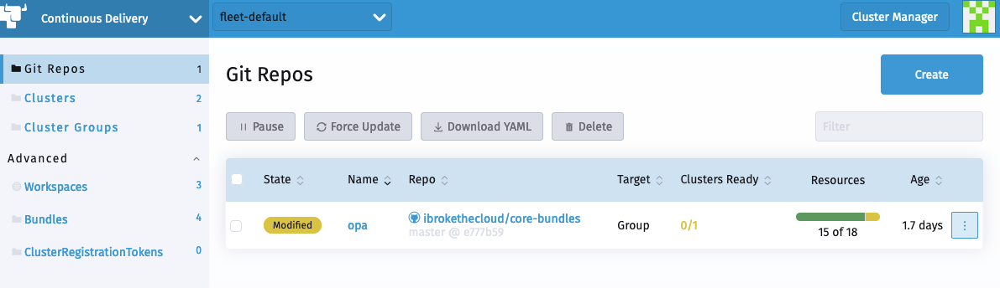

Génération de différences pour ignorer les GitRepos modifiés
La livraison continue dans Rancher est alimentée par SUSE® Rancher Prime Continuous Delivery. Lorsqu’un utilisateur ajoute un CR GitRepo, la livraison continue crée les bundles Fleet associés.
Vous pouvez accéder à ces bundles en naviguant vers l’Explorateur de Cluster (interface de tableau de bord) et en sélectionnant la section Bundles.
Les graphiques regroupés peuvent avoir certains objets qui sont modifiés à l’exécution, par exemple dans ValidatingWebhookConfiguration, le caBundle est vide et le certificat CA est injecté par le cluster.
Cela conduit à ce que le statut du bundle et du GitRepo associé soit signalé comme "Modifié"

Bundle associé

Les SUSE® Rancher Prime Continuous Delivery bundles prennent en charge la possibilité de spécifier un correctif jsonPointer personnalisé.
Avec le correctif, les utilisateurs peuvent demander à SUSE® Rancher Prime Continuous Delivery d’ignorer les modifications d’objets et les objets entiers.
Génération de comparePatches avec fleet bundlediff
La commande CLI fleet bundlediff lit les informations de différence déjà présentes dans les champs d’état Bundle et BundleDeployment et les affiche sous une forme lisible par l’homme.
Elle peut également générer un extrait diff: prêt à l’emploi au format fleet.yaml, afin que vous puissiez accepter la dérive observée sans avoir à construire manuellement des chemins pour JSON Patch.
Visualisation des différences
# Show all diffs across all namespaces, grouped by Bundle
fleet bundlediff
# Show diffs for a specific Bundle
fleet bundlediff --bundle my-bundle
# Show diffs for a specific BundleDeployment
fleet bundlediff --bundle-deployment my-bundle-deployment -n cluster-fleet-local-local-abc123
# Output in JSON format
fleet bundlediff --jsonLa sortie texte par défaut regroupe les résultats par Bundle et liste chaque ressource modifiée ou non prête avec son correctif de fusion JSON :
Bundle: my-bundle
BundleDeployments with diffs: 1
━━━━━━━━━━━━━━━━━━━━━━━━━━━━━━━━━━━━━━━━━━━━━━━━━━━━━━━━━━━━━━━━━━
BundleDeployment: cluster-fleet-local-local-abc123/my-bundle-deployment
Modified Resources (1):
Resource: ConfigMap.v1 default/my-config
Status: Modified
Patch:
{
"metadata": {
"annotations": {
"timestamp": "2024-01-15T10:30:00Z"
}
}
}Génération d’un extrait fleet.yaml comparePatches
Utilisez --fleet-yaml avec --bundle-deployment pour produire un bloc diff: que vous pouvez coller directement dans votre fleet.yaml. La commande convertit le correctif de fusion JSON observé en opérations remove et les fusionne avec tout comparePatches déjà configuré sur le Bundle, de sorte que les ignorés existants restent intacts.
fleet bundlediff \
--fleet-yaml \
--bundle-deployment my-bundle-deployment \
-n cluster-fleet-local-local-abc123Exemple de sortie :
diff:
comparePatches:
- apiVersion: v1
kind: ConfigMap
name: my-config
namespace: default
operations:
- op: remove
path: /metadata/annotations/timestampVous pouvez rediriger la sortie et l’ajouter à votre fleet.yaml dans Git :
fleet bundlediff \
--fleet-yaml \
--bundle-deployment my-bundle-deployment \
-n cluster-fleet-local-local-abc123 >> fleet.yamlAprès avoir validé et poussé le fleet.yaml mis à jour, SUSE® Rancher Prime Continuous Delivery réconcilie le changement et le bundle passe de Modifié à Prêt. Le champ lui-même n’est pas rétabli. SUSE® Rancher Prime Continuous Delivery cesse simplement de le signaler comme dérive.
|
Le flag |
Voir Fleet bundlediff [SUSE® Rancher Prime Continuous Delivery bundlediff] pour la référence complète du flag.
Ignorer les modifications d’objet
Exemple simple
Dans cet exemple simple, nous créons un Service et un ConfigMap sur lesquels nous appliquons un bundle diff.
Exemple de Gatekeeper
Dans cet exemple, nous essayons de déployer opa-gatekeeper en utilisant la livraison continue vers nos clusters.
Le bundle opa-gatekeeper associé au GitRepo opa est dans un état modifié.
Chaque chemin dans le CR GitRepo a un CR Bundle associé. L’utilisateur peut voir les Bundles et le diff associé nécessaire dans l’état du Bundle.
Dans notre cas, les différences détectées sont les suivantes :
summary:
desiredReady: 1
modified: 1
nonReadyResources:
- bundleState: Modified
modifiedStatus:
- apiVersion: admissionregistration.k8s.io/v1
kind: ValidatingWebhookConfiguration
name: gatekeeper-validating-webhook-configuration
patch: '{"$setElementOrder/webhooks":[{"name":"validation.gatekeeper.sh"},{"name":"check-ignore-label.gatekeeper.sh"}],"webhooks":[{"clientConfig":{"caBundle":"Cg=="},"name":"validation.gatekeeper.sh","rules":[{"apiGroups":["*"],"apiVersions":["*"],"operations":["CREATE","UPDATE"],"resources":["*"]}]},{"clientConfig":{"caBundle":"Cg=="},"name":"check-ignore-label.gatekeeper.sh","rules":[{"apiGroups":[""],"apiVersions":["*"],"operations":["CREATE","UPDATE"],"resources":["namespaces"]}]}]}'
- apiVersion: apps/v1
kind: Deployment
name: gatekeeper-audit
namespace: cattle-gatekeeper-system
patch: '{"spec":{"template":{"spec":{"$setElementOrder/containers":[{"name":"manager"}],"containers":[{"name":"manager","resources":{"limits":{"cpu":"1000m"}}}],"tolerations":[]}}}}'
- apiVersion: apps/v1
kind: Deployment
name: gatekeeper-controller-manager
namespace: cattle-gatekeeper-system
patch: '{"spec":{"template":{"spec":{"$setElementOrder/containers":[{"name":"manager"}],"containers":[{"name":"manager","resources":{"limits":{"cpu":"1000m"}}}],"tolerations":[]}}}}'Sur la base de ce résumé, il y a trois objets auxquels il faut appliquer un correctif.
Nous allons les examiner un par un.
1. ValidatingWebhookConfiguration:
La configuration de webhook de validation gatekeeper-validating-webhook a deux ValidatingWebhooks dans sa spécification.
Dans les cas où plus d’un élément dans le champ nécessite un correctif, ce correctif les désignera comme $setElementOrder/ELEMENTNAME.
À partir de ces informations, nous pouvons voir que les deux ValidatingWebhooks en question sont :
"$setElementOrder/webhooks": [
{
"name": "validation.gatekeeper.sh"
},
{
"name": "check-ignore-label.gatekeeper.sh"
}
],Dans chaque ValidatingWebhook, les champs qui doivent être ignorés sont les suivants :
{
"clientConfig": {
"caBundle": "Cg=="
},
"name": "validation.gatekeeper.sh",
"rules": [
{
"apiGroups": [
"*"
],
"apiVersions": [
"*"
],
"operations": [
"CREATE",
"UPDATE"
],
"resources": [
"*"
]
}
]
},et
{
"clientConfig": {
"caBundle": "Cg=="
},
"name": "check-ignore-label.gatekeeper.sh",
"rules": [
{
"apiGroups": [
""
],
"apiVersions": [
"*"
],
"operations": [
"CREATE",
"UPDATE"
],
"resources": [
"namespaces"
]
}
]
}En résumé, nous devons ignorer les champs rules et clientConfig.caBundle dans notre spécification de correctif.
Le champ webhook dans la spécification ValidatingWebhookConfiguration est un tableau, donc nous devons adresser les éléments par leurs valeurs d’index.

Sur la base de ces informations, notre bundle diff ressemblerait à ce qui suit :
- apiVersion: admissionregistration.k8s.io/v1
kind: ValidatingWebhookConfiguration
name: gatekeeper-validating-webhook-configuration
operations:
- {"op": "remove", "path":"/webhooks/0/clientConfig/caBundle"}
- {"op": "remove", "path":"/webhooks/0/rules"}
- {"op": "remove", "path":"/webhooks/1/clientConfig/caBundle"}
- {"op": "remove", "path":"/webhooks/1/rules"}2. Déploiement gatekeeper-controller-manager :
Le déploiement gatekeeper-controller-manager est modifié car des limites d’UC et des tolérances sont appliquées (qui ne figurent pas dans le bundle actuel).
{
"spec": {
"template": {
"spec": {
"$setElementOrder/containers": [
{
"name": "manager"
}
],
"containers": [
{
"name": "manager",
"resources": {
"limits": {
"cpu": "1000m"
}
}
}
],
"tolerations": []
}
}
}
}Dans ce cas, il n’y a qu’un seul conteneur dans la spécification du déploiement, et ce conteneur a des limites d’UC et des tolérances ajoutées.
Sur la base de ces informations, notre bundle diff ressemblerait à ce qui suit :
- apiVersion: apps/v1
kind: Deployment
name: gatekeeper-controller-manager
namespace: cattle-gatekeeper-system
operations:
- {"op": "remove", "path": "/spec/template/spec/containers/0/resources/limits/cpu"}
- {"op": "remove", "path": "/spec/template/spec/tolerations"}3. Déploiement gatekeeper-audit :
Le déploiement gatekeeper-audit est modifié de manière similaire au gatekeeper-controller-manager, avec des limites d’UC et des tolérances supplémentaires appliquées.
{
"spec": {
"template": {
"spec": {
"$setElementOrder/containers": [
{
"name": "manager"
}
],
"containers": [
{
"name": "manager",
"resources": {
"limits": {
"cpu": "1000m"
}
}
}
],
"tolerations": []
}
}
}
}Tout comme le gatekeeper-controller-manager, il n’y a qu’un seul conteneur dans la spécification de déploiement, et celui-ci a des limites d’UC et des tolérances ajoutées.
Sur la base de ces informations, notre bundle diff ressemblerait à ce qui suit :
- apiVersion: apps/v1
kind: Deployment
name: gatekeeper-audit
namespace: cattle-gatekeeper-system
operations:
- {"op": "remove", "path": "/spec/template/spec/containers/0/resources/limits/cpu"}
- {"op": "remove", "path": "/spec/template/spec/tolerations"}Combiner le tout
Nous pouvons maintenant combiner tous ces correctifs comme suit :
diff:
comparePatches:
- apiVersion: apps/v1
kind: Deployment
name: gatekeeper-audit
namespace: cattle-gatekeeper-system
operations:
- {"op": "remove", "path": "/spec/template/spec/containers/0/resources/limits/cpu"}
- {"op": "remove", "path": "/spec/template/spec/tolerations"}
- apiVersion: apps/v1
kind: Deployment
name: gatekeeper-controller-manager
namespace: cattle-gatekeeper-system
operations:
- {"op": "remove", "path": "/spec/template/spec/containers/0/resources/limits/cpu"}
- {"op": "remove", "path": "/spec/template/spec/tolerations"}
- apiVersion: admissionregistration.k8s.io/v1
kind: ValidatingWebhookConfiguration
name: gatekeeper-validating-webhook-configuration
operations:
- {"op": "remove", "path":"/webhooks/0/clientConfig/caBundle"}
- {"op": "remove", "path":"/webhooks/0/rules"}
- {"op": "remove", "path":"/webhooks/1/clientConfig/caBundle"}
- {"op": "remove", "path":"/webhooks/1/rules"}Nous pouvons maintenant les ajouter directement au bundle pour les tester et également les valider dans le fleet.yaml de votre GitRepo.
Une fois ajoutés, le GitRepo devrait être déployé et passer à l’état "Actif".
Ignorer des objets entiers
Lors de l’installation d’un chart tel que Consul, un job nommé consul-server-acl-init est créé, puis supprimé une fois qu’il a été exécuté avec succès.
Ce chart peut être installé en créant un GitRepo pointant vers un dépôt git en utilisant un fleet.yaml tel que :
defaultNamespace: consul
helm:
releaseName: test-consul
chart: "consul"
repo: "https://helm.releases.hashicorp.com"
values:
global:
name: consul
acls:
manageSystemACLs: trueL’installation de ce chart entraînera que le GitRepo affiche un statut Modified, et le job consul-server-acl-init sera absent une fois que celui-ci aura été complété.
Cela peut être remédié avec le bundle diff suivant dans notre fleet.yaml:
diff:
comparePatches:
- apiVersion: batch/v1
kind: Job
namespace: consul
name: consul-server-acl-init
operations:
- {"op":"ignore"}Dans certains cas, le nom complet du job peut ne pas être connu à l’avance, par exemple lorsqu’il est généré. De plus, une charge de travail donnée peut créer plusieurs jobs dans le même namespace, ce qui entraînerait généralement un bundle diff par job.
Pour faciliter la gestion de ces situations, les jobs peuvent également être ignorés :
-
par une expression régulière sur leurs noms, auquel cas le bundle diff ci-dessus pourrait ressembler à :
diff:
comparePatches:
- apiVersion: batch/v1
kind: Job
namespace: consul
name: 'consul-server.*'
operations:
- {"op":"ignore"}
-
ou en spécifiant un champ
namevide, ou en omettant complètement ce champ, auquel cas tous les jobs situés dans cet espace de noms (dans cet exemple dans l’espace de nomsconsul) seront ignorés.
Plus d’informations sur la syntaxe regex prise en charge ici.
Mise à l’échelle horizontale des pods
Lorsqu’il s’agit de déploiements ou de StatefulSets référencés par un HPA, les bundle diffs ne sont plus nécessaires pour gérer les mises à jour du nombre de réplicas dans l’intervalle configuré. L’agent Fleet filtrera automatiquement ces mises à jour ; par conséquent, le déploiement de bundle source ne sera pas considéré modifié.
Cependant, si le champ replicas d’un Deployment ou d’un StatefulSet est défini à une valeur supérieure ou inférieure à l’intervalle toléré par un HPA qui le référence, cette modification apparaîtra toujours dans l’état du déploiement de bundle source.
Les champs autoscaling/v1 et autoscaling/v2 sont tous deux pris en charge.
Un champ minReplicas vide dans un HPA sera interprété comme 1.